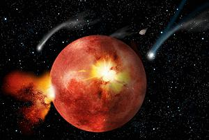

Life itself seems highly likely. It took only a half billion years from the formation of our planet for life to appear in it's seas. Beyond that, the evolution leading to us is extremely unlikely. Here is a listing of known unlikely events that made us possible. Surely there are other more subtle ones.
Two Lines of Life:
Not one, but two surviving lines originated from Luca (Last Universal Common Ancestor): Bacteria and Archaea. Archaea are quite different from Bacteria, but they look so alike they were thought to be Bacteria until 1977. They were at first thought to only reside in marginal environments, such as undersea volcanic vents. Now it is known about half of what we thought to be Bacteria are actually Archaea. The importance of two lines will be found below - but what are the odds of having two lines? Impossible to calculate.Cyanobacteria:
Cyanobacteria invented Photosynthesis, using solar energy to break up Carbon Dioxide and use the Carbon to grow more Cyanobacteria. This was highly successful, but Oxygen was a waste product. Cyanobacteria are the sole source of Oxygen in our atmosphere. Plant Chloroplasts are all evolved from Cyanobacteria. What are the odds? Pretty slim, this took 3/4 of a billion years, and has happened exactly once in 4-1/4 billion years.Extinction:
Cyanobacteria were highly successful, and the Oxygen they emitted caused the period of one billion years known as "The Great Rust". Eventually there was nothing left to rust, and free Oxygen started building up in the atmosphere. Life on Earth was nearly extinguished when the atmosphere switched from being reducing to being oxidizing. Only a few forms, those already accustomed to very marginal environments, survived to repopulate the Earth. The chances of survival? Impossible to calculate.Eukaryots:
Here is the importance of there being two lines of life, and one of the most absurdly unlikely happenings in our evolution. Some Archaea got it's DNA tangled up with some Bacterial DNA. This caused it to go totally bonkers, growing to enormous size, around 50,000 times the volume of a bacteria. This chimera, known as a Eukaryot, continued absorbing more bacterial DNA from other sources. What are the odds? It took 2-1/4 billion years to happen, and it has happened only once in 4-1/4 billion years. Very thin odds.Infection:
Some form of Eubacteria was engulfed by a Eukaryot, but was not absorbed as food, nor did it cause a deadly infection. This bacterium took up permanent residence, maintaining it's own DNA, as it still does to this day. In reaction to this, and other risks of confusion, the Eukaryots walled off their own DNA with a membrane, forming the Cell Nucleus. The invading bacteria was perfectly willing to pay rent for this comfortable environment, evolving into the Mitochondria, without which high energy life forms would be impossible. Among many other functions they now perform, they convert difficult to use molecules to forms the Eukaryot cell can much more easily use for energy. What are the odds? This has happened exactly once in 4-1/4 billion years.Infection #2:
. Some Eukaryote cell, already infected with the evolving Mitochondria, became similarly infected with a Cyanobacterum. This bacteria also failed to be digested and took up residence, evolving into Chloroplasts, which, like the Mitochondria, maintain their own separate DNA. What are the odds? This has happened exactly once in 4-1/4 billion years.Now there were two advanced single cell life forms, one producing food, the other consuming food. What are the chances? Multiply the chances of existence of Eukaryotes by chances of infection with Mitochondria by the chances of infection by Cyanobacteria. We're getting awfully close to 0 here, many zeros to the right of the decimal.
OK, this is all simplified, because there are some other fragments and remanents of evolution that still exist, but we can ignore them, unless one causes a disease you suffer from.
Multicellular Life:
Both lines of the totally improbable, and by now unbelievably complex, Eukaryotes developed multicellular forms, with different cells specializing in different functions, thus making complex life forms. What are the odds? Well, we're already so close to 0 how can you even figure it?Sexual Reproduction:
Evolution, which had been painfully slow over billions of years, now developed methods of DNA mixing, and evolution took off like gangbusters! What are the odds? Well it took 3 billion years to happen, with odds already approaching 0 as a limit.Three Lines:
Eukariotes had already split into 2 lines, those with Chlorophyll (Plants) which could manufacture their own food, and those without, Opisthokonts, which fed on both living and dead life. Opisthokonts now split into two lines with very different characteristics, Animals and Fungus. Animals developed environmentally aware and self mobile entities. What intelligence is inherent in the vast network of fungal mycelium is still beyond our knowledge. These three lines are of critical importance to each other. The chances? This took 3-3/4 billion years to happen, and happened only once in 4-1/4 billion years. Go figure.Land Living:
A few lines of Animals learned to live out of water. Fortunately, some plants had already learned to live on land, so there was enough to eat. For animals, this was very difficult, especially in regards to reproduction. Some absurdly complex methods of reproduction were developed by the variety we call mammals - so complex it can't possibly work, but it does - perhaps sometimes too well.OK, now we're down to the last 10 minutes of evolution.
Extinction:
Could the very evolutionarily advanced Dinosaurs become an intelligent life form? Maybe they did, but we don't understand their form of intelligence. Anyway, an asteroid hit the Earth on one side, while an incredibly violent volcanic event was happening on the other side. Climate and atmosphere were severely disrupted, and the non-avian Dinosaurs went extinct (along with most other life on Earth). A very few small burrowing mammals survived. Lack of competition freed the mammals to dominate the Earth. What are the chances of this double disaster? What are the chances that we survived when most everything else died? Not real good in either case, but we pulled through.Tree Living:
A particular line of land mammals evolved for living in trees. They developed a form of hands that were able to easily manipulate physical objects. Chances here aren't so bad, a few other animals are fairly close.Crossed Wiring:
One variety of these tree living critters got their wiring crossed up, with the thinking part of their brain connected (weakly) to the pleasure center. Bored with trees, these critters came down, taking up life on the ground, and protecting themselves from predators with rocks and sharp sticks.Fire:
This one variety, and only this one variety, learned how to control fire, which terrified all other animals. With it, they learned to cook food. Cooking food greatly expanded the available food supply and greatly expanded the nutritional value of the food. This allowed them the luxury of developing large, energy expensive brains.Sleep:
Fire also could be used as protection from large predators at night. This security allowed development of a very different and very complex sleep pattern. This resulted from the exact structure of the mammalian brain, and it gave the ability to organize much larger social structures. The various Human species were born, but with only one survivor, Homo sapiens.Timing:
Extremely critical. If any one of the earlier steps had taken only 20% longer, we would have missed the window of a habitable Earth entirely.Conclusion:
Intelligent aliens in Science Fiction are a lovely form of fantasy, but in reality, extremely unlikely. The chances of our own evolution going the way it did are pretty much identical to 0, and that's pretty much what we can expect elsewhere.And, It Gets Even Worse
 The "Nice Model", named for the city of Nice in France, is a complex model for the formation and evolution of our Solar System. It has been refined until it produces a final result very similar to the physical evidence we see.
The Solar system consists of inner and outer zones, separated by the "Frost line" ("Snow line", "Ice line"). The rocky planets, Mercury, Venus, Earth, and Mars were formed well to the Sun side of the Frost line, which was at 2.7 AU (Astronomic Units) from the sun when the planets started forming. This is right in the center of the Asteroid Belt today. Earth is at 1 AU, and the "Frost line" is now at about 5 AU.
Between the Frost Line and the Sun is a region without water, carbon, or organic molecules. Only refractory materials survived in the heat of the Sun. Only sterile planets could form inside the Frost Line. The nearside of the Asteroid Belt is devoid of water, and the far side is wet.
Outside the "Frost Line" there formed two Gas Giant planets, Jupiter and Saturn, and two Ice Giant planets, Uranus and Neptune - and lots and lots of "space junk". This region abounds with water and organic compounds, including amino acids, the building blocks of life, and metals. We know this because pieces still hit the Earth now and then. They have been analyzed in detail, and our instruments can detect water in space, confirming there is a lot of it out there.
So how did the sterile earth become coated with water, organic molecules, and various metals? The Gas Giant planets had wandering orbits and were constantly interacting gravitationally with each other, and also physically with the space junk. Asteroids and such were hurled away, some across the Frostline where they bombarded the inner planets, including Earth. Earth was large enough, and far enough from the Sun to be able to hold on to this stuff.
And for intelligent life similar to ours, the metals brought by this bombardment are also critical. Our technology has been based on these metals since invention of the metal plow, actually earlier if you count weapons and jewelry. So how common is this complex interaction of Gas Giant and Ice Giant planets with all this space junk? Without the asteroid bombardment there can be no life on inner planets, never mind intelligent life. We do not know if this is common in other solar systems.
But, it gets even worse! Jupiters orbit was migrating towards the Sun, but due to very complex gravitational interactions among the outer planets and space junk, including resonance, it reversed and actually moved farther from the Sun. This may be a very unusual thing. Astronomers have discovered many "hot Jupiter" solar systems where a huge gas giant is circling its star far within the distance where it could have formed - and would have wiped out any inner planets that could have hosted life as it migrated inward. The ease with which these systems can be found suggests that this is the normal mode, and the survival of inner planets is quite unusual.
So, not only do we have the statistical improbabilities of evolution, we seem also to have a far smaller base of planets for possibilities to develop on, further reducing the probability of intelligent life - so don't expect to be having lunch with ET any time soon.
Asteroids, a book by Martin Elvis explains all this in much greater detail. Wikipedia has an extensive article on the Nice Model, which will be nearly impossible for most people to understand. They also have an article on the "Frost line" that is fairly easy to understand. Painting of asteroids hitting the moon in the Late Heavy Bombardment by Tim Wetherell - Australian National University, distributed under license Creative Commons Attribution-ShareAlike v3.0 Unported - attribution required.
Andrew Grygus